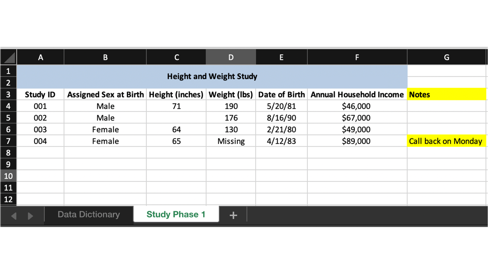
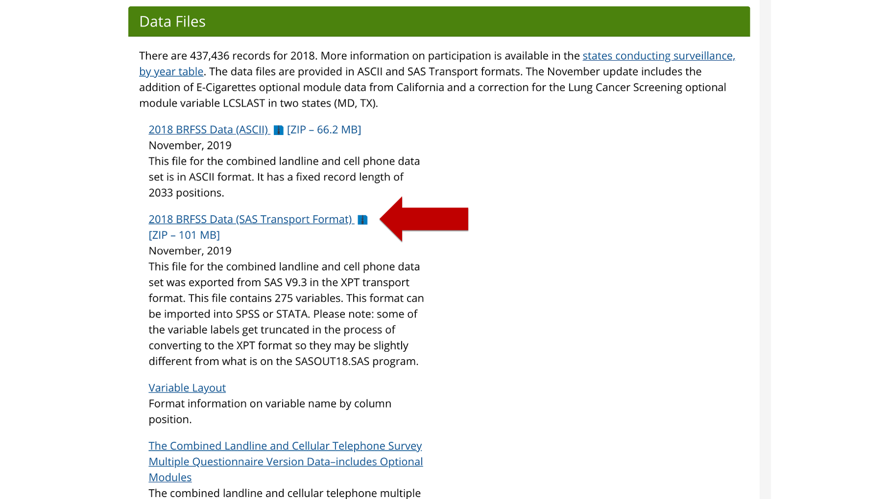

14 Importing binary files
In the last chapter we learned that there are many different file types that one can use to store data. We also learned how to use the readr package to import several different variations of plain text files into R.
In this chapter, we will focus on data stored in binary files. Again, you can think of binary files as being more complex than plain text files and accessing the information in binary files requires the use of special software. Some examples of binary files that I have frequently seen used in epidemiology include Microsoft Excel spreadsheets, SAS data sets, and Stata data sets. Below, we will learn how to import all three file types into R.

14.1 Packages for importing data
Technically, base R does not contain any functions that can be used to import the binary file types discussed above. However, the foreign package contains functions that may be used to import SAS data sets and Stata data sets, and is installed by default when you install R on your computer. Having said that, we aren’t going to use the foreign package in this chapter. Instead, we’re going to use the following packages to import data in the examples below. If you haven’t done so already, I suggest that you go ahead and install these packages now.
14.2 Importing Microsoft Excel spreadsheets
I’m probably sent data in Microsoft Excel files more than any other file format. Fortunately, the readxl package makes it really easy to import Excel spreadsheets into R. And, because that package is maintained by the same people who create the readr package that you have already seen, I think it’s likely that the readxl package will feel somewhat familiar right from the start.
I would be surprised if any of you had never seen an Excel spreadsheet before – they are pretty ubiquitous in the modern world – but I’ll go ahead and show a screenshot of our height and weight data in Excel for the sake of completeness.

All we have to do to import this spreadsheet into R as a data frame is pass the path to the excel file to the path argument of the read_excel() function.
You may click here to download this file to your compter.
## # A tibble: 4 x 4
## ID sex ht_in wgt_lbs
## <chr> <chr> <dbl> <dbl>
## 1 001 Male 71 190
## 2 002 Male 69 176
## 3 003 Female 64 130
## 4 004 Female 65 154👆Here’s what we did above:
- We used
readxl’sread_excel()function to import a Microsoft Excel spreadsheet. That spreadsheet was imported as a data frame and we assigned that data frame to the R object calledexcel.
⚠️Warning: Make sure to always include the file extension in your file paths. For example, using “/excel” instead of “/excel.xlsx” above (i.e., no .xlsx) would have resulted in an error telling you that the filed does not exist.
Fortunately for us, just passing the Excel file to the read_excel() function like this will usually “just work.” But, let’s go ahead and simulate another situation that is slightly more complex. Once again, we’ve received data from a team that is using Microsoft Excel to capture some study data.

As you can see, this data looks very similar to the csv file we previously imported. However, it looks like the study team has done a little more formatting this time. Additionally, they’ve added a couple of columns we haven’t seen before – date of birth and annual household income.
As a final little wrinkle, the data for this study is actually the second sheet in this Excel file (also called a workbook). The study team used the first sheet in the workbook as a data dictionary that looks like this:

Once again, we will have to deal with deal with some of the formatting that was done in Excel before we can analyze our data in R.
You may click here to download this file to your compter.
We’ll start by taking a look at the result we get when we try to pass this file to the read_excel() function without changing any of read_excel()’s default values.
## New names:
## * `` -> ...2
## * `` -> ...3## # A tibble: 8 x 3
## `Height and Weight Study\r\nDa… ...2 ...3
## <chr> <chr> <chr>
## 1 <NA> <NA> <NA>
## 2 Variable Definition Type
## 3 Study ID Randomly assigned participant… Continuous
## 4 Assigned Sex at Birth Sex the participant was assig… Dichotomous (F…
## 5 Height (inches) Participant's height in inches Continuous
## 6 Weight (lbs) Participant's weight in pounds Continuous
## 7 Date of Birth Participant's date of birth Date
## 8 Annual Household Income Participant's annual househol… Continuous (Cu…And, as I’m sure you saw coming, this isn’t the result we wanted. However, we can get the result we wanted by making a few tweaks to the default values of the sheet, col_names, col_types, skip, and na arguments of the read_excel() function.
excel <- read_excel(
path = "/Users/bradcannell/Dropbox/Datasets/Height and Weight/excel_complex.xlsx",
sheet = "Study Phase 1",
col_names = c("id", "sex", "ht_in", "wgt_lbs", "dob", "income"),
col_types = c(
"text",
"text",
"numeric",
"numeric",
"date",
"numeric",
"skip"
),
skip = 3,
na = c("", "NA", "Missing")
)
excel## # A tibble: 4 x 6
## id sex ht_in wgt_lbs dob income
## <chr> <chr> <dbl> <dbl> <dttm> <dbl>
## 1 001 Male 71 190 1981-05-20 00:00:00 46000
## 2 002 Male NA 176 1990-08-16 00:00:00 67000
## 3 003 Female 64 130 1980-02-21 00:00:00 49000
## 4 004 Female 65 NA 1983-04-12 00:00:00 89000As I said, the readr package and readxl package were developed by the same people. So, the code above looks similar to the code we used to import the csv file in the previous chapter. Therefore, I’m not going to walk through this code step-by-step. Rather, I’m just going to highlight some of the slight differences.
You can type
?read_excelinto your R console to view the help documentation for this function and follow along with the explanation below.The first argument to the
read_excel()function is thepathargument. It serves the same purpose as thefileargument toread_csv()– it just has a different name.The
sheetargument to theread_excel()function tells R which sheet of the Excel workbook contains the data you want to import. In this case, the study team named that sheet “Study Phase 1”. We could have also passed the value2to thesheetargument because “Study Phase 1” is the second sheet in the workbook. However, I suggest using the sheet name. That way, if the study team sends you a new Excel file next week with different ordering, you are less likely to accidently import the wrong data.The value we pass to the
col_typesargument is now a vector of character strings instead of a list of functions nested in thecol()function.The values that the col_types function will accept are
"skip"for telling R to ignore a column in the spreadsheet,"guess"for telling R to guess the variable type,"logical"for logical (TRUE/FALSE) variables, “numeric” for numeric variables,"date"for date variables,"text"for character variables, and"list"for everything else.Notice that we told R to import income as a numeric variable. This caused the commas and dollar signs to be dropped. We did this because keeping the commas and dollar signs would have required us to make income a character variable (numeric variables can only include numbers). If we had imported income as a character variable, we would have lost the ability to perform mathematical operations on it. Remember, it makes no sense to “add” two words together. Later, I will show you how to add dollar signs and commas back to the numeric values if you want to display them in your final results.
We used the
col_names,skip, andnaarguments in exactly the same way we used them in the read_csv function.
You should be able to import most of the data stored in Excel spreadsheets with just the few options that we discussed above. However, there may be times were importing spreadsheets is even more complicated. If you find yourself in that position, I suggest that you first check out the readxl website here.
14.3 Importing data from other statistical analysis software
Many applications designed for statistical analysis allow you to save data in a binary format. One reason for this is that binary data formats allow you to save metadata alongside your data values. Metadata is data about the data. Using our running example, the data is about the heights, weights, and other characteristics of our study participants. Metadata about this data might include information like when this data set was created, or value labels that make the data easier to read (e.g., the dollar signs in the income variable).
In my experience, you are slightly more likely to have problems importing binary files saved from other statistical analysis applications than plain text files. Perhaps because they are more complex, the data just seems to become corrupt and do other weird things more often than is the case with plain text files. However, in my experience, it is also the case that when we are able to import binary files created in other statistical analysis applications, doing so requires less adjusting of default values. In fact, we will usually only need to pass the file path to the correct read_ function.
Below, we will see some examples of importing binary files saved in two popular statistical analysis applications – SAS and Stata. We will use the haven package to import both.
14.4 Importing SAS data sets
SAS actually allows users to save data in more than one type of binary format. Data can be saved as SAS data sets or as SAS Transport files. SAS data set file names end with the .sas7bdat file extension. SAS Transport file file names end with the .xpt file extension.
In order to import a SAS data set, we typically only need to pass the correct file path to haven’s read_sas() function.
You may click here to download this file to your compter.
sas <- read_sas("/Users/bradcannell/Dropbox/Datasets/Height and Weight/height_and_weight.sas7bdat")
sas## # A tibble: 4 x 4
## ID sex ht_in wgt_lbs
## <chr> <chr> <dbl> <dbl>
## 1 001 Male 71 190
## 2 002 Male 69 176
## 3 003 Female 64 130
## 4 004 Female 65 154👆Here’s what we did above:
- We used
haven’sread_sas()function to import a SAS data set. That data was imported as a data frame and we assigned that data frame to the R object calledsas.
In addition to SAS data sets, data that has been altered in SAS can also be saved as a SAS transport file. Some of the national, population-based public health surveys (e.g., BRFSS and NHANES) make their data publicly available in this format.
You can download the 2018 BRFSS data as a SAS Transport file here. About halfway down the webpage, there is a link that says, “2018 BRFSS Data (SAS Transport Format)”.

Clicking that link should download the data to your computer. Notice that the SAS Transport file is actually stored inside a zip file. You can unzip the file first if you would like, but you don’t even have to do that. Amazingly, you can pass the path to the zipped .xpt file directly to the read_xpt() function like so:
## # A tibble: 6 x 275
## `_STATE` FMONTH IDATE IMONTH IDAY IYEAR DISPCODE SEQNO `_PSU` CTELENM1
## <dbl> <dbl> <chr> <chr> <chr> <chr> <dbl> <chr> <dbl> <dbl>
## 1 1 1 0105… 01 05 2018 1100 2018… 2.02e9 1
## 2 1 1 0112… 01 12 2018 1100 2018… 2.02e9 1
## 3 1 1 0108… 01 08 2018 1100 2018… 2.02e9 1
## 4 1 1 0103… 01 03 2018 1100 2018… 2.02e9 1
## 5 1 1 0112… 01 12 2018 1100 2018… 2.02e9 1
## 6 1 1 0111… 01 11 2018 1100 2018… 2.02e9 1
## # … with 265 more variables: PVTRESD1 <dbl>, COLGHOUS <dbl>, STATERE1 <dbl>,
## # CELLFON4 <dbl>, LADULT <dbl>, NUMADULT <dbl>, NUMMEN <dbl>, NUMWOMEN <dbl>,
## # SAFETIME <dbl>, CTELNUM1 <dbl>, CELLFON5 <dbl>, CADULT <dbl>,
## # PVTRESD3 <dbl>, CCLGHOUS <dbl>, CSTATE1 <dbl>, LANDLINE <dbl>,
## # HHADULT <dbl>, GENHLTH <dbl>, PHYSHLTH <dbl>, MENTHLTH <dbl>,
## # POORHLTH <dbl>, HLTHPLN1 <dbl>, PERSDOC2 <dbl>, MEDCOST <dbl>,
## # CHECKUP1 <dbl>, EXERANY2 <dbl>, SLEPTIM1 <dbl>, CVDINFR4 <dbl>,
## # CVDCRHD4 <dbl>, CVDSTRK3 <dbl>, ASTHMA3 <dbl>, ASTHNOW <dbl>,
## # CHCSCNCR <dbl>, CHCOCNCR <dbl>, CHCCOPD1 <dbl>, HAVARTH3 <dbl>,
## # ADDEPEV2 <dbl>, CHCKDNY1 <dbl>, DIABETE3 <dbl>, DIABAGE2 <dbl>,
## # LASTDEN4 <dbl>, RMVTETH4 <dbl>, SEX1 <dbl>, MARITAL <dbl>, EDUCA <dbl>,
## # RENTHOM1 <dbl>, NUMHHOL3 <dbl>, NUMPHON3 <dbl>, CPDEMO1B <dbl>,
## # VETERAN3 <dbl>, EMPLOY1 <dbl>, CHILDREN <dbl>, INCOME2 <dbl>,
## # WEIGHT2 <dbl>, HEIGHT3 <dbl>, PREGNANT <dbl>, DEAF <dbl>, BLIND <dbl>,
## # DECIDE <dbl>, DIFFWALK <dbl>, DIFFDRES <dbl>, DIFFALON <dbl>,
## # SMOKE100 <dbl>, SMOKDAY2 <dbl>, STOPSMK2 <dbl>, LASTSMK2 <dbl>,
## # USENOW3 <dbl>, ALCDAY5 <dbl>, AVEDRNK2 <dbl>, DRNK3GE5 <dbl>,
## # MAXDRNKS <dbl>, FLUSHOT6 <dbl>, FLSHTMY2 <dbl>, IMFVPLAC <dbl>,
## # PNEUVAC4 <dbl>, FALL12MN <dbl>, FALLINJ3 <dbl>, SEATBELT <dbl>,
## # DRNKDRI2 <dbl>, HADMAM <dbl>, HOWLONG <dbl>, HADPAP2 <dbl>, LASTPAP2 <dbl>,
## # HPVTEST <dbl>, HPLSTTST <dbl>, HADHYST2 <dbl>, PCPSAAD3 <dbl>,
## # PCPSADI1 <dbl>, PCPSARE1 <dbl>, PSATEST1 <dbl>, PSATIME <dbl>,
## # PCPSARS1 <dbl>, BLDSTOOL <dbl>, LSTBLDS3 <dbl>, HADSIGM3 <dbl>,
## # HADSGCO1 <dbl>, LASTSIG3 <dbl>, HIVTST6 <dbl>, HIVTSTD3 <dbl>,
## # HIVRISK5 <dbl>, …👆Here’s what we did above:
We used
haven’sread_xpt()function to import a zipped SAS Transport File. That data was imported as a data frame and we assigned that data frame to the R object calledbrfss_2018.Because this is a large data frame (437,436 observations and 275 variables), we used the
head()function to print only the first 6 rows of the data to the screen.
But, this demonstration actually gets even cooler. Instead of downloading the SAS Transport file to our computer before importing it, we can actually sometimes import files, including SAS Transport files, directly from the internet.
For example, you can download the 2017-2018 NHANES demographic data as a SAS Transport file here

If you right-click on the link that says, “DEMO_I Data [XPT - 3.3 MB]”, you will see an option to copy the link address.

Click “Copy Link Address” and then navigate back to RStudio. Now, all you have to do is paste that link address where you would normally type a file path into the read_xpt() function. When you run the code chunk, the read_xpt() function will import the NHANES data directly from the internet (assuming you are connected to the internet). 😲
## # A tibble: 6 x 46
## SEQN SDDSRVYR RIDSTATR RIAGENDR RIDAGEYR RIDAGEMN RIDRETH1 RIDRETH3 RIDEXMON
## <dbl> <dbl> <dbl> <dbl> <dbl> <dbl> <dbl> <dbl> <dbl>
## 1 93703 10 2 2 2 NA 5 6 2
## 2 93704 10 2 1 2 NA 3 3 1
## 3 93705 10 2 2 66 NA 4 4 2
## 4 93706 10 2 1 18 NA 5 6 2
## 5 93707 10 2 1 13 NA 5 7 2
## 6 93708 10 2 2 66 NA 5 6 2
## # … with 37 more variables: RIDEXAGM <dbl>, DMQMILIZ <dbl>, DMQADFC <dbl>,
## # DMDBORN4 <dbl>, DMDCITZN <dbl>, DMDYRSUS <dbl>, DMDEDUC3 <dbl>,
## # DMDEDUC2 <dbl>, DMDMARTL <dbl>, RIDEXPRG <dbl>, SIALANG <dbl>,
## # SIAPROXY <dbl>, SIAINTRP <dbl>, FIALANG <dbl>, FIAPROXY <dbl>,
## # FIAINTRP <dbl>, MIALANG <dbl>, MIAPROXY <dbl>, MIAINTRP <dbl>,
## # AIALANGA <dbl>, DMDHHSIZ <dbl>, DMDFMSIZ <dbl>, DMDHHSZA <dbl>,
## # DMDHHSZB <dbl>, DMDHHSZE <dbl>, DMDHRGND <dbl>, DMDHRAGZ <dbl>,
## # DMDHREDZ <dbl>, DMDHRMAZ <dbl>, DMDHSEDZ <dbl>, WTINT2YR <dbl>,
## # WTMEC2YR <dbl>, SDMVPSU <dbl>, SDMVSTRA <dbl>, INDHHIN2 <dbl>,
## # INDFMIN2 <dbl>, INDFMPIR <dbl>👆Here’s what we did above:
We used
haven’sread_xpt()function to import a SAS Transport File directly from the NHANES website. That data was imported as a data frame and we assigned that data frame to the R object callednhanes_demo.Because this is a large data frame (9,254 observations and 46 variables), we used the
head()function to print only the first 6 rows of the data to the screen.
14.5 Importing Stata data sets
Finally, we will import a Stata data set (.dta) to round out our discussion of importing data from other statistical analysis software packages. There isn’t much of anything new here – you could probably have even guessed how to do this without me showing you.
You may click here to download this file to your compter.
stata <- read_stata("/Users/bradcannell/Dropbox/Datasets/Height and Weight/height_and_weight.dta")
stata## # A tibble: 4 x 4
## ID sex ht_in wgt_lbs
## <chr> <chr> <dbl> <dbl>
## 1 001 Male 71 190
## 2 002 Male 69 176
## 3 003 Female 64 130
## 4 004 Female 65 154👆Here’s what we did above:
- We used
haven’sread_stata()function to import a Stata data set. That data was imported as a data frame and we assigned that data frame to the R object calledstata.
You now know how to write code that will allow you to import data stored in all of the file formats that we will use in this book, and the vast majority of formats that you are likely to encounter in your real-world projects. In the next section, I will introduce you to a tool in RStudio that makes importing data even easier.